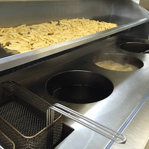

Homepage
Bij frituur Sportcentrum kan je steeds terecht voor een lekkere hap. Wij bieden jullie een snelle lekere hap aan voor een schappelijk prijsje. Klantvriendelijkheid , innovatief zijn en hygiëne zijn bij ons vaste waarden. Wij zijn steeds op zoek naar manieren om ons contact en aanbod persoonlijker te maken.
We zijn gelegen naast de parking van het voetbalstadion Oud-Heverlee Leuven. Studenten of Supporters die na de match nog zin hebben in een lekker pakje friet zijn bij ons altijd welkom. Naast een grote parking in de buurt hebben we buiten enkele tafels staan waar je gezellig in het zonnetje kan eten.
Bij ons staat hygiëne héél centraal. Dit is dan uiteraard zeer belangrijk voor ons. Onze frieten worden gebakken in een verzorgde ketel die dagelijks gekuist wordt. Onze frieten worden ook gebakken in frituurvet in plaats van met frituurolie. Dit frituurvet is véél gezonder dan olie want het bevat plantaardige oliën en zijn rijk aan onverzadigde vetzuren. Deze vetzuren helpen om het cholesterolgehalte van het bloed laag. Dit is dan opzicht weer goed voor het voorkomen van hart- en vaatziekten.